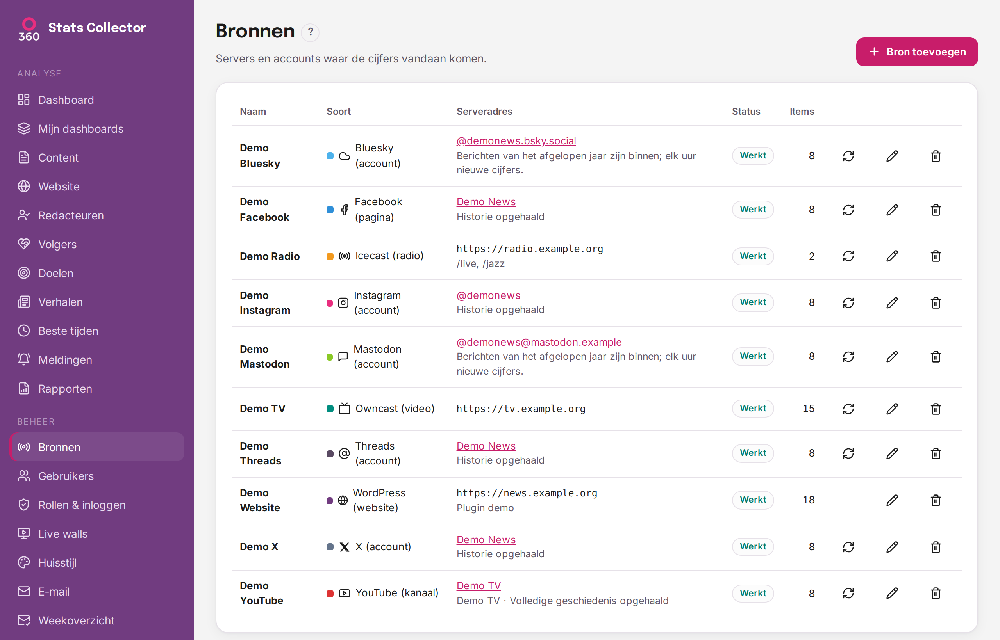

Bronnen instellen: overzicht¶
Een bron is één website, socialemedia-account of streamingserver waar Stats Collector cijfers van verzamelt. Elke bron voeg je toe onder Beheer → Bronnen → Bron toevoegen. Deze pagina vertelt per platform waar je moet zijn, wat je nodig hebt voordat je begint en welke waarde in welk veld van Stats Collector komt. Elk platform heeft een eigen pagina met de volledige stap-voor-stap-handleiding.

Voordat je begint¶
Controleer dit één keer, voordat je iets koppelt:
- Stats Collector heeft zijn openbare
https://-adres. Facebook, Instagram, Threads, YouTube en X sturen je na het inloggen terug naar Stats Collector. Ze accepteren alleen eenhttps://-adres dat vanaf internet bereikbaar is. Regel dat eerst: zie Reverse proxy en HTTPS. Het adres inSC_PUBLIC_URL(in/etc/stats-collector/config.env) moet precies het adres zijn dat mensen in hun browser typen. - Je bent beheerder in Stats Collector. Alleen beheerders zien Beheer → Bronnen.
- Je hebt het juiste account op het platform. Je moet beheerder zijn van de Facebook-pagina, beheerder of eigenaar van het YouTube-kanaal, eigenaar van het X-account, enzovoort. Het persoonlijke account van een collega is niet genoeg als die geen beheerder van de pagina of het kanaal is.
- Gebruik waar het kan een organisatie-account voor ontwikkelaarsapps (bijvoorbeeld een gedeelde mailbox voor Google Cloud en de Meta-app), zodat de apps niet verdwijnen als iemand vertrekt.
Welk platform, waar moet je zijn¶
| Bron | Waar je naartoe gaat | Wat je nodig hebt | Kosten | Beoordeling door het platform | Tijd |
|---|---|---|---|---|---|
| WordPress | Je eigen WordPress-beheer (Plugins → Nieuwe plugin → Plugin uploaden) | Beheerder in WordPress | Gratis | Nee | 10 minuten per site |
| YouTube | console.cloud.google.com | Google-account dat het kanaal beheert | Gratis | Alleen om het opnieuw koppelen na 7 dagen te stoppen (optioneel) | 30 minuten |
| developers.facebook.com/apps en business.facebook.com | Beheerder van de pagina, geverifieerd Business-portfolio | Gratis | Ja, advanced access (dagen tot weken); werkt meteen voor mensen met een rol in de app | 1 uur + beoordeling | |
| Dezelfde Meta-app als Facebook | Professioneel Instagram-account gekoppeld aan de pagina | Gratis | Zelfde beoordeling als Facebook | 15 minuten na Facebook | |
| Threads | Dezelfde Meta-app, use case Access the Threads API | Het Threads-account (uitnodiging als tester) | Gratis | Ja, advanced access; werkt meteen voor testers | 30 minuten |
| X | console.x.com | Eigenaar van het X-account, betaalkaart | Per gelezen bericht (~$30/maand) | Nee | 30 minuten |
| Bluesky | Nergens: alleen de handle | De handle | Gratis | Nee | 2 minuten |
| Mastodon | Nergens, of Voorkeuren → Ontwikkelen op je Mastodon-server | Het account; soms een toegangstoken | Gratis | Nee | 2–5 minuten |
| Icecast | Je Icecast-server of hostingpartij | Serveradres; beheergebruiker en -wachtwoord voor extra cijfers | Gratis | Nee | 5 minuten |
| Owncast | Je Owncast-beheer (https://<owncast>/admin) |
Serveradres; beheerwachtwoord (optioneel) | Gratis | Nee | 5 minuten |
Inloggen met Microsoft 365 is geen bron, maar stel je op dezelfde manier in; zie Microsoft 365.
Wat komt in welk veld¶
| Bron | Velden in Stats Collector | Waar je de waarde vindt |
|---|---|---|
| WordPress | Naam, adres van de website | Kies je zelf; het adres van de site |
| → je krijgt adres voor de plugin, sitesleutel, geheim | Plak ze in WordPress onder Instellingen → Stats Collector | |
| YouTube | Client-ID, Clientgeheim | Google Cloud → API's en services → Inloggegevens → je OAuth-client |
| Facebook / Instagram | App-ID, App-geheim, Configuratie-ID (optioneel) | Meta-app → App settings → Basic; configuratie onder Facebook Login for Business → Configurations |
| Threads | Threads-app-ID, Threads-app-geheim | Meta-app → Use cases → Access the Threads API → Customize → Settings (niet het Facebook-app-ID) |
| X | OAuth 2.0 Client ID, OAuth 2.0 Client Secret, maandbudget, lezen elke … uur, prijs per bericht | X-console → je app → Keys and tokens → OAuth 2.0 Client ID and Client Secret |
| Bluesky | Bluesky-handle | Het profiel op bsky.app, bijv. @onsnieuws.bsky.social |
| Mastodon | Mastodon-account, Toegangstoken (optioneel) | Het profiel, bijv. @onsnieuws@mastodon.social; token via Voorkeuren → Ontwikkelen |
| Icecast | Serveradres, mountpoints, beheergebruiker, beheerwachtwoord | icecast.xml (<authentication>), of vraag het je hostingpartij |
| Owncast | Serveradres, beheerwachtwoord | Owncast-beheer → Configuration → Server setup → Admin password |
Terugstuuradressen (redirect)¶
Bij de platforms waar je inlogt (Google, Meta, Threads, X) moet het platform weten waar het je naar terugstuurt. Stats Collector toont dit terugstuuradres in het bronformulier, met een kopieerknop. Kopieer het daar; ze zien er altijd zo uit:
| Platform | Terugstuuradres | Waar je het plakt |
|---|---|---|
| YouTube | https://<stats-adres>/api/connectors/youtube/callback |
Google Cloud → OAuth-client → Geautoriseerde omleidings-URI's |
| Facebook / Instagram | https://<stats-adres>/api/connectors/meta/callback |
Meta-app → Facebook Login for Business → Settings → Valid OAuth Redirect URIs |
| Threads | https://<stats-adres>/api/connectors/threads/callback |
Meta-app → Access the Threads API → Settings → Redirect callback URLs |
| X | https://<stats-adres>/api/connectors/x/callback |
X-console → app → User authentication settings → Callback URI / Redirect URL |
Het adres moet precies kloppen: https, dezelfde hostnaam, geen schuine streep aan het eind. Verander je later het adres van Stats Collector, pas het dan op elk platform aan.
Zo gaat het altijd¶
Elke bron volgt dezelfde stappen:
- Bereid het platform voor (ontwikkelaarsapp, rechten, plugin): zie de pagina van het platform.
- Beheer → Bronnen → Bron toevoegen, kies het soort en geef een duidelijke naam (die staat op het dashboard en de livewall, bijvoorbeeld Facebook IJmond360 of Radio live).
- Vul de waarden uit de tabel hierboven in en klik op Opslaan.
- Bij inlogplatforms klik je op Koppelen met … / Verbinden met … en log je in op de eigen pagina van het platform. Sta alle rechten toe waar het om vraagt.
- Gebruik Verbinding testen waar die knop er is. De kolom Status toont dan Werkt, of waarom het misgaat.
- De historie wordt op de achtergrond opgehaald; het dashboard vult zich binnen enkele minuten (YouTube: uren bij een oud kanaal).
Je kunt zoveel bronnen van één soort toevoegen als je wilt: één per pagina, account, site of stream. Een Meta-, Google- of X-app kun je voor meerdere bronnen gebruiken: vul hetzelfde ID en geheim in.
Geheimen en veiligheid¶
- App-geheimen, clientgeheimen, wachtwoorden en tokens worden versleuteld opgeslagen en nooit meer getoond. Om er een te wijzigen typ je een nieuwe waarde; laat je het veld leeg, dan blijft de huidige bewaard.
- Stats Collector vraagt alleen leesrechten. Het plaatst, reageert of wijzigt nooit iets op een platform.
- Vertrekt iemand die een bron heeft gekoppeld, koppel de bron dan opnieuw met een andere beheerder voordat zijn of haar account wordt verwijderd; anders stopt het verzamelen met Toegang … is beëindigd.
Komt later: LinkedIn en TikTok¶
Deze zijn nog niet beschikbaar, omdat beide platforms de app eerst beoordelen, en dat duurt weken. Je kunt alvast beginnen:
- LinkedIn: maak op linkedin.com/developers/apps een app die gekoppeld is aan de LinkedIn-pagina van de organisatie (een paginabeheerder moet die bevestigen) en vraag onder Products de Community Management API aan. LinkedIn vraagt een korte schermopname en bedrijfsgegevens.
- TikTok: maak op developers.tiktok.com een app, voeg de producten Login Kit en Display API toe met de scopes
user.info.basic,user.info.statsenvideo.list, en dien hem in ter beoordeling.
Bewaar de ID's en geheimen; je hebt ze nodig zodra deze bronnen er zijn.
Gaat er iets mis?¶
Elke platformpagina eindigt met een tabel met meldingen en wat je dan doet. De meest voorkomende oorzaken:
| Wat je ziet | Oorzaak |
|---|---|
| Het platform zegt dat de redirect-URI niet is toegestaan | Het terugstuuradres op het platform is niet precies het adres dat Stats Collector toont. |
| Toegang … is beëindigd | Wie koppelde heeft het wachtwoord veranderd, de rol verloren, of het token is verlopen. Klik opnieuw op Koppelen met …. |
| Het werkt bij jou maar stopt na een tijdje | De app staat nog in ontwikkel- of testmodus. Rond de beoordeling af (Meta, Threads) of publiceer de app (Google). |
| Geen cijfers van WordPress | WordPress-cron draait niet; zie WordPress. |
Zie ook Problemen oplossen.